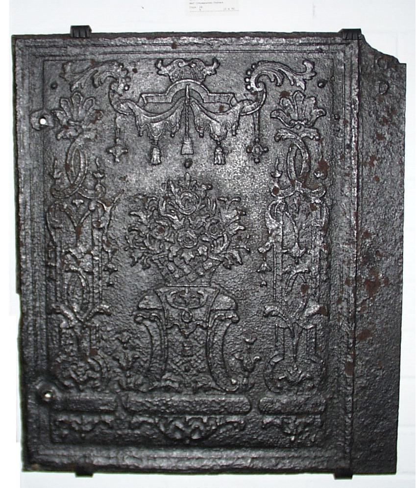

Wird auf der linken Seite des Ofens angebracht. Oft spiegelverkehrt zur rechten Platte.

Befindet sich auf der rechten Seite. Häufig mit identischen Motiven wie links – nur gespiegelt.

Die zentrale Frontplatte des Ofens. Meist mit besonders aufwändigen Motiven verziert.